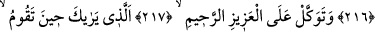
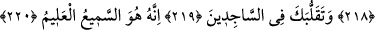
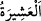
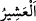

EN YAKIN AKRABANI
UYAR
214. (Önce) en yakın akrabanı uyar.
215. Sana uyan müminlere (merhamet) kanadını indir.
216. Şâyet sana karşı gelirlerse de ki: Ben sizin yaptıklarınızdan muhakkak ki
uzağım.
217. Sen O mutlak galip ve engin merhamet sahibine güvenip dayan.
218. O ki, (gece namaza) kalktığın zaman seni görüyor.
219. Secde edenler arasında dolaşmanı da (görüyor).
220. Çünkü her şeyi işiten, her şeyi bilen O’dur.
“(Önce) en yakın akrabanı uyar” Şirk ve günahların hâsıl ettiği azab ile uyar.
“
” kişinin kendileriyle çok olduğu âilesidir. Yâni o kimse için onlar tam sayı
yerinde olurlar. Çünkü “
(on)” sayısı kâmil/tam sayıdır demektir. Böylece aşîret,
kişinin kendileriyle çok olduğu yakınlarından oluşan her âile çevresi için isim olmuştur.
“
” yakın olsun, tanıdık olsun yakın ve samimi olan demektir. el-Müfredat’ta böyle
geçmektedir. Onlardan maksad Haşîmoğulları ve Muttaliboğullarıdır.
Yakın akrabalarını uyarmakla emrolunması, kişi için onların durumuyla ilgilenmenin
daha önemli olduğu içindir. Bu yüzden önce onları uyarmaya başlamak daha uygundur.
Nitekim iyilik, sıla-i rahim ve benzeri şeylerde önce onlardan başlamak daha
evlâdır/uygundur. Bu âyet şu âyetin benzeridir. “Ey îman edenler, yakınlarınızda
bulunan kafirlerle savaşın” (et-Tevbe, 9/123). Onlar kâfirlerin hepsiyle savaşmakla
emrolunmuşlardı. Fakat onlar kendilerine en yakın olunca, savaşa onlardan başlamakla
emrolundular. Burada da durum aynıdır. Yine yakınlar uyarılınca uzaktakileri uyarmak
evlâdır/daha uygundur.
Rivâyet edildiğine göre bu âyet nâzil olunca Rasûlullah (s.a.) Safâ tepesine çıktı ve
kol kol onları çağırdı. Etrafında toplanınca onlara şöyle dedi: “Size şu dağın arkasında
düşman atlılarının olduğunu haber versem beni tasdik eder misiniz?” Onlar da:
“Evet” dediler. Bunun üzerine Rasûlullah (s.a.): “Ben çetin bir azâbın önünde size bir